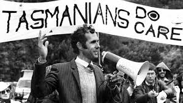

It all started in 1976.
Dr Bob Brown held a meeting with 16 of us in his home, here we sparked the campaign that saved the Franklin River and defined a generation.
6000 Australian’s joined together, physically blocking the construction of the Franklin and Gordon-below-Franklin Dams in Tasmania, each willing to be arrested for the cause. This ignited a movement, and now, there’s over 30,000 of us.
Right now, everything is at risk. We need you.
A majority of everyday Australians had cast a vote for the environment.
There shall be no dam on the Franklin River!

It’s time to support the life that supports us.